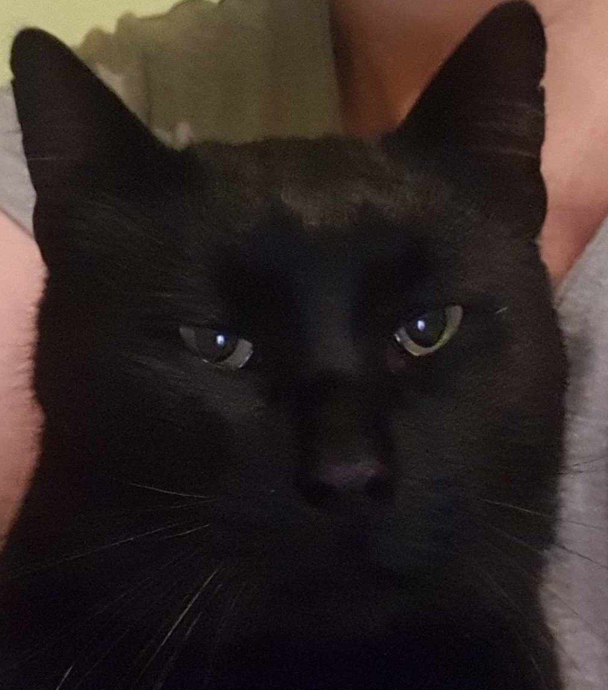
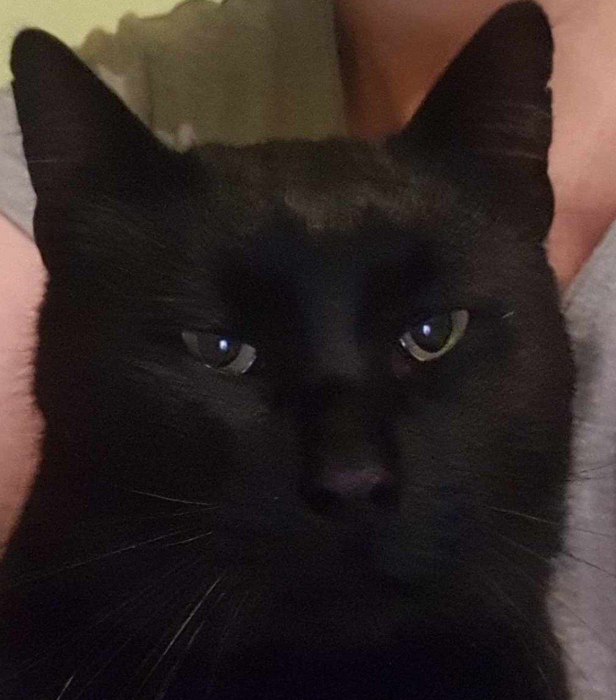

Nekem van egy fekete macskám, a neve Kormi.
Befogadott cica, a barackfa alatt találtuk még 2018 őszén. Nehezen tudtuk magunkhoz szoktatni, mert valószínűleg elüldözték. A helyi csoportba tette fel valaki, hogy keresi a fekete Kormi macskáját, mi írtunk, hogy itt van, de nem jöttek érte. Biztosan bántották, mert kicsit sántít menés közben és eleinte nagyon félt, ha hirtelen mozdultunk.
3 hónap alatt tudtuk beszoktatni a lakásba, de maradt kinti-benti cica.
Tulajdonságai
A szőre nem teljesen egyforma hosszú, van benne sok hosszabb szál és már néhány fehér is, mert lassan 8 éves lesz.
A szeme színe nagyon érdekes, az eredeti halványzöld, ha boldog, vagy vadászik, akkor narancs, ha mérges, akkor egész sötét.

 

Most már kézhez szokott, kedves állat lett belőle, legjobban hozzánk bújva, vagy az ölünkben szeret lenni.
Etetése
Mivel sterilizált macska, ezért a nagyja száraztáp steril macskának való, de persze sok mindent megeszik, sajnos a madarakat is megfogja néha.
| Benti étel | Benti csemege | Kinti étel | Kinti csemege |
|---|---|---|---|
| Purina one | Dreamis | Whiskas | Prevital |
| Felix | Shah Sensitive | ||
| Gourmet Paste | Coshida Pure Taste |
Tisztántartása
A macska tiszta állat, nem szoktuk fürdetni, szerintem nem is viselné el.
Viszont érdekesség, hogy ha esik az eső és vizesen jön be, hagyja, hogy megtöröljük.
Egyedül a fülét szoktuk takarítani, mert szeret kinn fetrengeni a homokban, így muszáj kiszedni a koszt belőle. Anyukámnak szokta engedni.
Nevelése
A macska nevelhetetlen, de kezelhető. Az eltelt 5 évben, amióta nálunk van, sokat szelidült, már nem bántja a szomszéd macskákat, ő is odajár a többiekhez. Teljesen jól szocializálódtak egymással.
Minket csak a játék hevében karmol meg, de akkor rögtön bújik, szinte bocsánatot kér.
Megfelelő tartási körülményei


A lakásban külön helye van, van doboza és rongy is, ahova feküdhet. Kint egy dobozba tud elbújni télen a hideg elől, ezt apukám készítette neki hungarocellből, ami le van vakolva és belül széna van benne, így nem fázik. Szeret ott bent lenni, és megnéztük, ha kijön: tényleg meleg a bundája, biztos nem fázik.
Nyáron pedig vannak kinn dobozok az ajtónál és a teraszon is, ahova be tud feküdni, mivel a macskáknak az kész Disneyland.